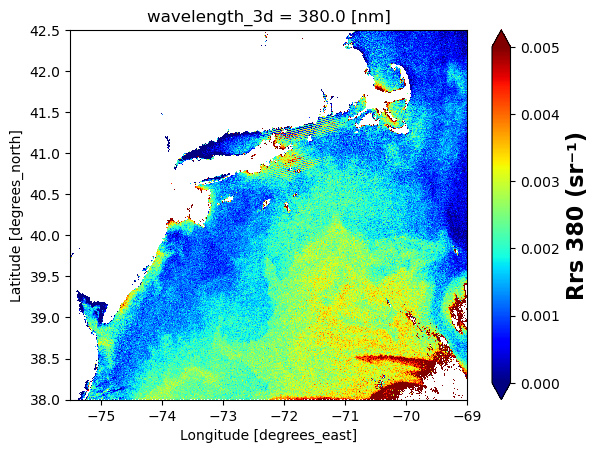
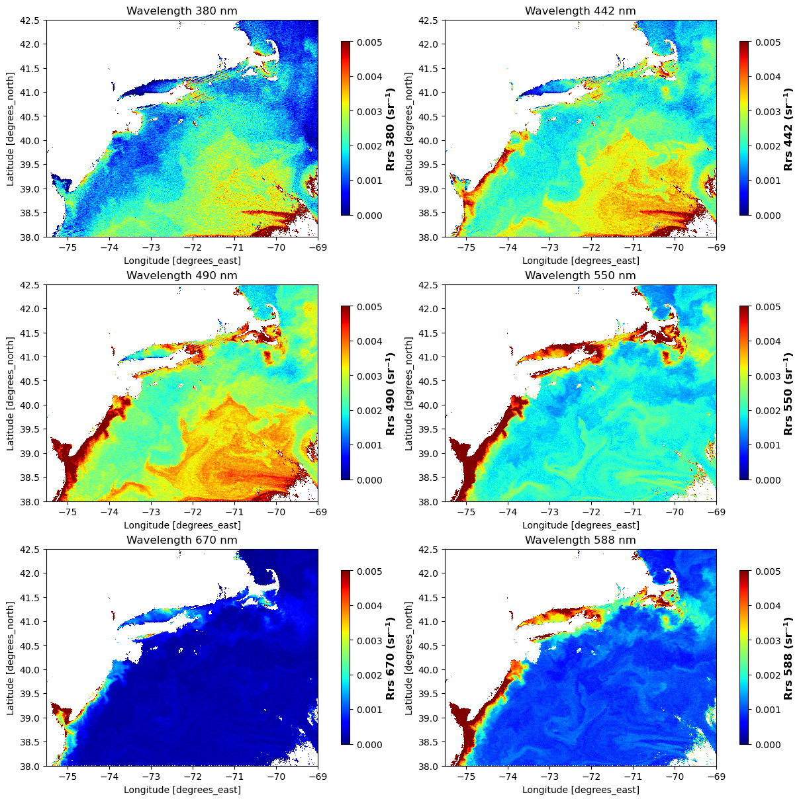
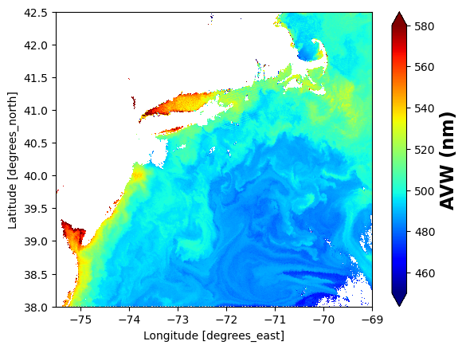

# pip install earthaccessPACE Level 2 plots for Rrs and AVW
Figures
Overview
The figures were generated from Level 2 products.
The PACE Level-2 OCI (ocean color instrument) data is available on an NASA EarthData. Search using the instrument filter “OCI” and processing level 2 filter https://search.earthdata.nasa.gov/search?fi=OCI&fl=2%2B-%2BGeophys.%2BVariables%252C%2BSensor%2BCoordinates and you will see 16 data collections.
The Level 2 netcdf files are grouped with the geophysical data, lat/lon, and wavelength data in different groups.
Data collection used
PACE OCI Level-2 Regional Apparent Optical Properties Data, version 3.0
- https://cmr.earthdata.nasa.gov/search/concepts/C3385049983-OB_CLOUD.html
- remote sensing reflectance and avw
- short name: PACE_OCI_L2_AOP
- date: 2024-05-13
- spatial bin: T171853
- spatial extent: lat=[38.0,42.5]; lon=[-75.5,-69.0];
- filename: PACE_OCI.20240513T171853.L2.OC_AOP.V3_0_0.nc
Prerequisites
You need to have an EarthData Login username and password. Go here to get one https://urs.earthdata.nasa.gov/
I assume you have a .netrc file at ~ (home). ~/.netrc should look just like this with your username and password. Create that file if needed. You don’t need to create it if you don’t have this file. The earthaccess.login(persist=True) line will ask for your username and password and create the .netrc file for you.
machine urs.earthdata.nasa.gov
login yourusername
password yourpasswordFor those not working in the JupyterHub
Uncomment this and run the cell:
Rrs figures
Get data
%%time
# Authenticate to NASA
import earthaccess
auth = earthaccess.login(strategy="interactive", persist=True)
# (xmin=-73.5, ymin=33.5, xmax=-43.5, ymax=43.5)
bbox = (-75.5, 38.0, -69.0, 42.5)
import earthaccess
results = earthaccess.search_data(
short_name = "PACE_OCI_L2_AOP",
temporal = ("2024-05-13", "2024-05-13"),
bounding_box = bbox
)
fileset = earthaccess.open(results);CPU times: user 475 ms, sys: 77 ms, total: 552 ms
Wall time: 8 sExamine the groups
import h5netcdf
with h5netcdf.File(fileset[0]) as file:
groups = list(file)
groups['sensor_band_parameters',
'scan_line_attributes',
'geophysical_data',
'navigation_data',
'processing_control']Process data and subset
%%time
import xarray as xr
ds = xr.open_dataset(fileset[0], group="geophysical_data")
# Add coords
# Add coords
nav = xr.open_dataset(fileset[0], group="navigation_data")
nav = nav.set_coords(("longitude", "latitude"))
wave = xr.open_dataset(fileset[0], group="sensor_band_parameters")
wave = wave.set_coords(("wavelength_3d"))
dataset = xr.merge((ds["Rrs"], nav.coords, wave.coords))
# Subset
rrs_box = dataset.where(
(
(dataset["latitude"] > 38.0)
& (dataset["latitude"] < 42.5)
& (dataset["longitude"] > -75.5)
& (dataset["longitude"] < -69.0)
),
drop = True
)CPU times: user 12.6 s, sys: 6.03 s, total: 18.6 s
Wall time: 54.7 sMake plots
# make single plot
import matplotlib.pyplot as plt
rrs = rrs_box["Rrs"].sel(wavelength_3d = 380)
plot = rrs.plot(x="longitude", y="latitude", cmap="jet", vmin=0, vmax=0.005)
# Set x and y limits
plot.axes.set_xlim(-75.5, -69.0)
plot.axes.set_ylim(38.0, 42.5)
# Customize colorbar label
wave_string = "380" # or str(wavelength) if dynamic
plot.colorbar.set_label(f"Rrs {wave_string} (sr⁻¹)", fontsize=16, fontweight="bold")
plt.show()
import matplotlib.pyplot as plt
import matplotlib.colors as colors
# List of wavelengths to plot
wavelengths = [380, 442, 490, 550, 670, 588]
# Create figure and axes
fig, axes = plt.subplots(3, 2, figsize=(12, 12), constrained_layout=True)
axes = axes.flatten()
# Loop through wavelengths and plot
for i, wl in enumerate(wavelengths):
ax = axes[i]
# Extract Rrs and mask zeros (for log or safety)
rrs = rrs_box["Rrs"].sel(wavelength_3d=wl)
# Plot onto the provided axis
img = rrs.plot(
ax=ax,
x="longitude",
y="latitude",
cmap="jet",
vmin=0,
vmax=0.005,
add_colorbar=False # We'll add our own
)
# Set limits
ax.set_xlim(-75.5, -69.0)
ax.set_ylim(38.0, 42.5)
# Add colorbar
cbar = fig.colorbar(img, ax=ax, orientation="vertical", shrink=0.8)
cbar.set_label(f"Rrs {wl} (sr⁻¹)", fontsize=12, fontweight="bold")
# Optional: title or annotation
ax.set_title(f"Wavelength {wl} nm")
# Turn off unused axes (if any)
for j in range(len(wavelengths), len(axes)):
fig.delaxes(axes[j])
plt.show()
AVW figures
Get and set up data
%%time
# Authenticate to NASA
import earthaccess
auth = earthaccess.login(strategy="interactive", persist=True)
# (xmin=-73.5, ymin=33.5, xmax=-43.5, ymax=43.5)
bbox = (-75.5, 38.0, -69.0, 42.5)
import earthaccess
results = earthaccess.search_data(
short_name = "PACE_OCI_L2_AOP",
temporal = ("2024-05-13", "2024-05-13"),
bounding_box = bbox
)
fileset = earthaccess.open(results);
# load data
import xarray as xr
ds = xr.open_dataset(fileset[0], group="geophysical_data")
# Add coords
# Add coords
nav = xr.open_dataset(fileset[0], group="navigation_data")
nav = nav.set_coords(("longitude", "latitude"))
wave = xr.open_dataset(fileset[0], group="sensor_band_parameters")
wave = wave.set_coords(("wavelength_3d"))
dataset = xr.merge((ds["avw"], nav.coords, wave.coords))
# Subset
avw_box = dataset.where(
(
(dataset["latitude"] > 38.0)
& (dataset["latitude"] < 42.5)
& (dataset["longitude"] > -75.5)
& (dataset["longitude"] < -69.0)
),
drop = True
)CPU times: user 5.44 s, sys: 3.05 s, total: 8.49 s
Wall time: 36.9 s# make one plot
import matplotlib.pyplot as plt
plot = avw_box["avw"].plot(x="longitude", y="latitude", cmap="jet", vmin=450, vmax=580)
# Set x and y limits
plot.axes.set_xlim(-75.5, -69.0)
plot.axes.set_ylim(38.0, 42.5)
# Customize colorbar label
plot.colorbar.set_label("AVW (nm)", fontsize=16, fontweight="bold")
plt.show()